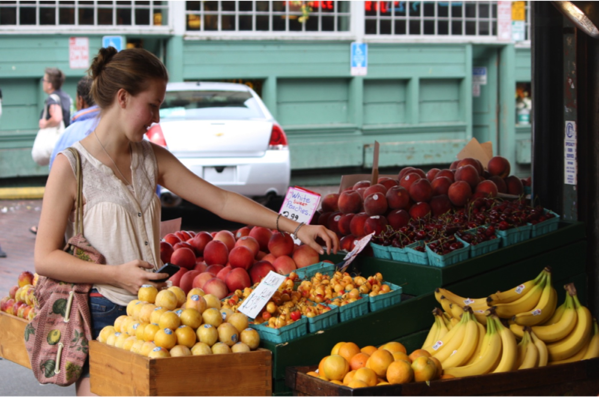

April 14, 2017
A Year-round Farmer’s Market: Your Freezer

Spring is in the air and that means it’s time to stock up on fresh local produce. In this photo of Seattle’s Pike Place Market, Finley is excited to try some in-season Rainier cherries. Warrenton’s Farmers’ Market starts on April 22nd or find a grower close to you at Local Harvest.
Now, go ahead and buy bushels of local berries this summer and then freeze them. You will be so happy to have berry oatmeal to brighten up a frigid winter morning! And you’ll be reducing your carbon footprint by eating local all year long.
By freezing fruits and vegetables you can also limit food waste at home. If that huge bunch of bananas on your counter is going bad, toss them in the freezer for smoothies. Or if you made fresh lemonade, you can freeze the lemon zest for future recipes. More tips on freezing produce here.
And your freezer will thank you, too. When it’s full of food, it will use less electricity. For our planet, freezing your fresh fruit and veggies is a win-win-winning plan!